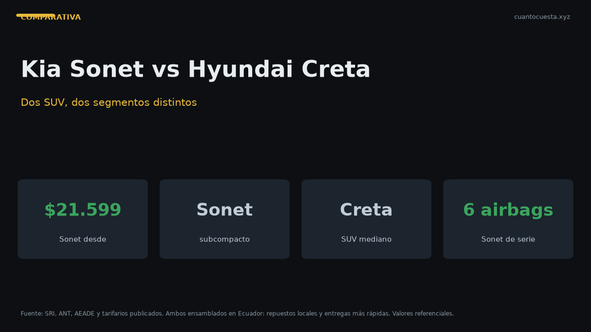

Kia Sonet vs Hyundai Creta: comparativa completa en Ecuador
Sonet y Creta no compiten en el mismo segmento. Comparamos espacio, consumo, garantía y precio para decirte si vale la pena subir de categoría o no.

El Kia Sonet y el Hyundai Creta no son rivales directos: el Sonet es un SUV subcompacto y el Creta uno mediano. Eso cambia todo el análisis. El Sonet arranca en $21.599 con 6 airbags de serie y garantía de 10 años; el Creta exige un presupuesto mayor por su plataforma, tamaño y equipamiento.
La pregunta correcta no es "cuál es mejor", sino si el salto de segmento justifica el dinero extra. Aquí está el desglose.
El Sonet se ensambla en Quito (Aymesa) y el Creta en Ecuador. Los dos se arman localmente — eso acorta tiempos de entrega y disponibilidad de repuestos frente a un importado puro.
Ficha técnica frente a frente
| Dato | Kia Sonet | Hyundai Creta |
|---|---|---|
| Segmento | SUV subcompacto | SUV mediano |
| Precio | $21.599 – ~$25.000 | Superior al Sonet por posicionamiento de línea — varía por versión |
| Motor | 1.5 L, 4 cil., 113 hp a 6.300 rpm | No especificado en nuestra ficha |
| Torque | 144 Nm | No especificado |
| Transmisión | Manual o IVT | No especificado |
| Largo | 4.110 mm | No especificado |
| Ancho | 1.790 mm | No especificado |
| Distancia entre ejes | 2.500 mm | No especificado |
| Maletero | 392 L (VDA) | No especificado |
| Tanque | 45 L | No especificado |
| Origen | Ensamblado en Quito por Aymesa | Ensamblado en Ecuador |
Los datos del Creta que no aparecen en nuestra ficha los omitimos a propósito. No publicamos especificaciones que no podamos verificar: si un dato no está confirmado, la celda lo dice.
La diferencia de segmento, explicada
Subcompacto y mediano no es una etiqueta de marketing. Es una diferencia física:
- Subcompacto (Sonet): 4.110 mm de largo, 2.500 mm entre ejes. Diseñado para ciudad, con maniobrabilidad como prioridad.
- Mediano (Creta): plataforma más grande, más espacio para piernas en la segunda fila y mayor ancho útil. Diseñado para familia.
Si viajas con tres adultos atrás de forma habitual, el segmento mediano se siente. Si andas solo o en pareja y estacionas todos los días en paralelo, el subcompacto te da mejor maniobrabilidad con 392 L de maletero, que alcanzan para el uso diario.
Lo que el Sonet gana de entrada: es 4.110 mm de largo en una ciudad donde el estacionamiento paralelo es el deporte nacional de todo quiteño y guayaquileño.
Consumo: el dato más contundente
| Ciclo | Sonet manual | Sonet IVT |
|---|---|---|
| Combinado | 15,14 km/l | 18,03 km/l |
Aquí hay un dato que sorprende a muchos: la versión automática IVT consume menos que la manual — 18,03 contra 15,14 km/l combinados. El 1.5 L con transmisión IVT está optimizado para bajas vueltas sostenidas.
Traducido a dinero, con 12.000 km al año y Extra/Ecopaís a $3,26 el galón:
| Versión | Litros al año | Costo al año | Costo a 5 años |
|---|---|---|---|
| Sonet manual | 792,6 L | $682,66 | ~$3.413 |
| Sonet IVT | 665,6 L | $573,24 | ~$2.866 |
$547 de diferencia a 5 años a favor de la automática. Es uno de los pocos casos en el mercado ecuatoriano donde pagar la transmisión automática se paga sola en combustible.
Seguridad y equipamiento
| Elemento | Kia Sonet |
|---|---|
| Airbags | 6 en todas las versiones |
| Frenos | ABS |
| Control de estabilidad | Sí |
| Estructura | Acero de ultra alta resistencia |
| Pantalla | 9" (entrada) / 10,25" (X Line y GT Line) |
| Conectividad | Apple CarPlay y Android Auto inalámbrico |
| Garantía | 10 años o 160.000 km |
6 airbags de serie en todas las versiones es el punto fuerte del Sonet. No es exclusivo de la versión tope: están desde la de entrada. En seguridad pasiva, ese es un argumento difícil de igualar.
La conectividad inalámbrica para CarPlay y Android Auto y la garantía de 10 años o 160.000 km completan el paquete.
Del equipamiento de seguridad y conectividad del Creta no tenemos ficha verificada, así que no lo comparamos columna contra columna. Confírmalo con el concesionario antes de decidir.
El contexto de mercado que sí pesa
| Marca | Unidades H1 2026 |
|---|---|
| Kia | 12.512 |
| Chevrolet | 9.341 |
| GWM | 4.329 |
| Hyundai | 4.232 |
Kia es la marca número uno del país en 2026, casi el triple que Hyundai. Eso se traduce en red de servicio, disponibilidad de repuestos y precio de reventa: hay más Sonet circulando, más mecánicos entrenados y más stock de partes.
El Sonet, además, es el tercer modelo más vendido de Ecuador en el H1 2026 con 3.593 unidades en 2025. No es un auto de nicho: es de los más comunes del país.
¿Vale la pena subir de segmento?
Subir de un subcompacto a un mediano cuesta, en términos generales de mercado, entre $4.000 y $10.000 más — depende de versión y promoción. Ese dinero compra:
Lo que ganas con un mediano:
- Más espacio para piernas y hombros atrás
- Maletero más grande
- Mayor presencia en carretera y estabilidad a velocidad de autopista
Lo que pierdes:
- Maniobrabilidad en ciudad
- Consumo (más peso, más motor)
- Costo de seguro: al 4% del valor, cada $5.000 extra son ~$200 más al año
- Cuota mensual más alta
La prueba práctica: si en los últimos 12 meses cargaste tres pasajeros adultos atrás más de diez veces, sube de segmento. Si no, estás pagando $5.000 por espacio que no usas.
Para quién es cada uno
Elige el Kia Sonet si:
- Tu uso es mayoritariamente urbano y en pareja o familia pequeña
- Quieres 6 airbags sin pagar la versión tope
- Valoras la garantía de 10 años o 160.000 km
- Prefieres comprar un modelo ensamblado en Quito, con repuestos locales
- Buscas el mejor consumo posible eligiendo la IVT
Considera el Hyundai Creta si:
- Viajas con frecuencia con la segunda fila llena
- Haces recorridos largos de autopista y quieres estabilidad de un mediano
- Tu presupuesto no aprieta al subir de segmento
- Valoras la postura más alta y el tamaño exterior del mediano
Veredicto
Para la mayoría de compradores ecuatorianos: Kia Sonet. Es el tercer modelo más vendido del país, tiene la garantía más larga del segmento, 6 airbags de serie y un consumo que a 5 años ahorra más de $500 en la versión automática. Representa la marca número uno del mercado y se ensambla en Quito.
El Creta solo justifica el salto si realmente usas el espacio extra. No compres segmento mediano "por si acaso": en ciudad pagas $5.000 más para estacionar con más dificultad.
Regla simple: si el 80% de tus viajes son de dos o menos ocupantes, el Sonet. Si el 30% o más de tus kilómetros son con la familia completa y equipaje, el Creta.
Precios de lista referenciales a septiembre de 2026. Los datos del Hyundai Creta marcados como "no especificado" no están confirmados en nuestras fuentes: verifícalos en concesionario. No constituye asesoría financiera.
Sigue leyendo
D-Max vs GWM Poer vs Hilux: qué camioneta conviene en Ecuador
Las tres camionetas 4x4 más vendidas de Ecuador frente a frente: precio, ensamblaje local, mant
Kia Soluto vs Chevrolet Groove: cuál conviene en Ecuador (2026)
El sedán más vendido de Ecuador contra el SUV más vendido: precio, consumo, espacio, seguridad
Mejor carro para comprar en Ecuador 2026: guía por presupuesto
Cuatro rangos de presupuesto y un ganador claro en cada uno: desde $14.000 hasta $35.000+, con
Cómo usamos estos datos
Las cifras de esta guía provienen de fuentes públicas oficiales y tarifarios de concesionarios publicados. Los valores son referenciales: tasas municipales, promociones y precios de repuestos varían. Verifica siempre en la entidad o concesionario antes de decidir.